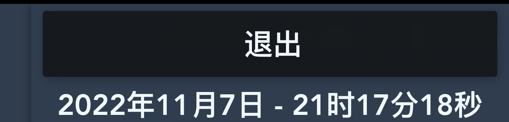
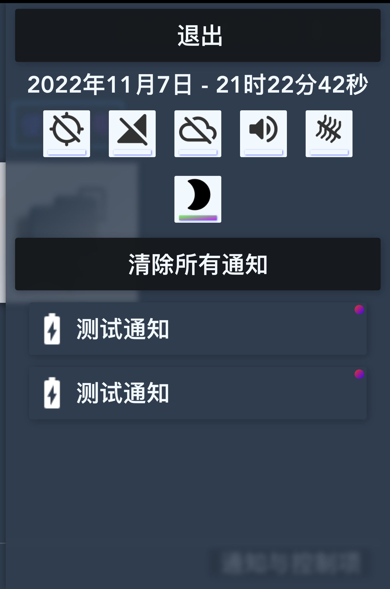

通知与控制项 - 简介
能够显示当前的通知和提供快捷按钮，您可以在此处打开和关闭功能而不需要进入【设定】
提示: 点击一下工具栏上的【通知与控制项】按钮即可打开。

打开通知与控制项
提示: 点击一下通知与控制项最上方的【退出】按钮即可退出。

关闭通知与控制项
从上到下依次:
【退出】- 用于退出通知与控制项
【详细时间】- 显示了包括日期的详细时间
【快捷控制项】- 用于快速打开或关闭某些功能
【清除所有通知】- 用于清除通知
【通知列表】- 显示目前的通知列表

通知与控制项画面